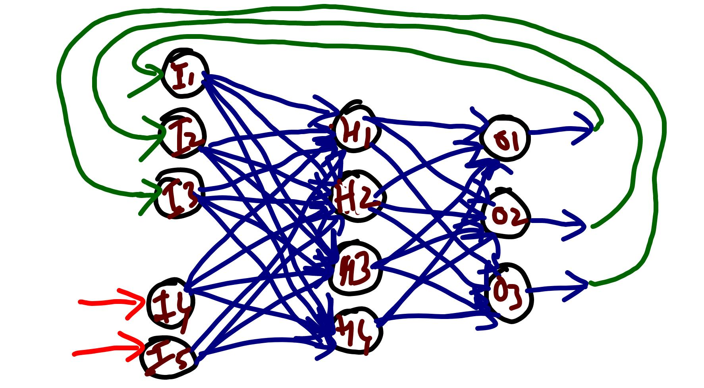

|
Prachodayan Enlightening Minds |
|
Recurrent Neural Networks have a peculiar feature of connecting the output of the network back to the input of the network. Part or whole of the input would be the previous output. This makes it appropriate for sequence analysis of data. In this experiment, we have considered 5 inputs (I1,I2,I3,I4,I5) and 3 outputs(O1,O2,O3). Out of 5 input, I1,I2 and I3 are fed from O1, O2 and O3. In the first iteration, I1, I2 and I3 are assumed to be 0. The experiment didnot have biases just for simplicity in demonstrating the computation.
|
 Figure: : Recurrent Neural Network |